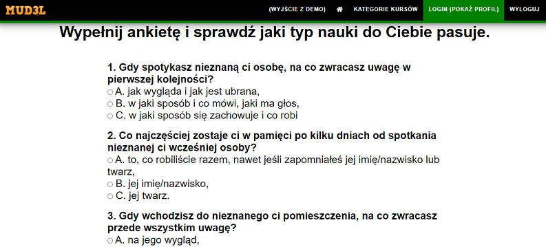
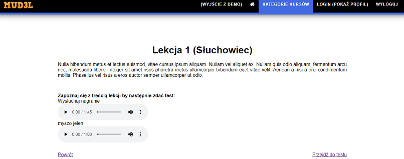

Dokumentacja systemu MUD3L
-
Cel projektu
Celem stworzenia modelu konceptualnego adaptacyjnego internetowego systemu multimedialnego jest umożliwienie zdobycia wiedzy w wybranych dziedzinach nauki, uwzgledniając preferencję stylu przyswajania wiedzy przez użytkowników.
-
Opis funkcjonalności poszczególnych użytkowników
-
Uczeń
System umożliwia rejestrację ucznia oraz nauczyciela. Po zalogowaniu jako uczeń, możemy przejść do kategorii kursów i wybrać interesujący nas przedmiot.

Podczas pierwszego logowania pojawia się kwestionariusz ankiety, na podstawie którego odbywa się weryfikacja stylu uczenia się użytkownika, tak, by przyswojenie wiedzy z kursów było możliwie jak najlepsze.
Wyróżniamy 3 typy stylów uczenia się: słuchowiec, wzrokowiec, działaniowec. Wynik ankiety trafia do bazy danych i na jego podstawie wyświetlane są odpowiednie treści użytkownikowi.
Po zweryfikowaniu stylu uczenia się, możemy zapisać się do interesującego nas kursu w danej kategorii, np. Kursy Informatyczne -> Kurs: Programowanie w języku Java.
Po zapisaniu się do kursu, użytkownik musi poczekać na akceptację przez administratora. Po zaakceptowaniu kursanta, możemy przejść do lekcji w kursie. Na stronie udostępnione są wszystkie lekcje przygotowane przez nauczyciela.
Po każdej lekcji przygotowany jest test z pytaniami dotyczącymi tematu. Aby przejść do kolejnych zajęć, musimy prawidłowo rozwiązać test z poprzedniej lekcji.
Jeśli nie uda nam się poprawnie rozwiązać testu, można rozwiązać go po raz kolejny, z możliwością wyboru lekcji przygotowanej pod inny styl uczenia się użytkownika, co być może umożliwi lepsze przyswojenie danego tematu dzięki innemu sposobowi prezentacji treści.

Po uzyskaniu odpowiedniej ilości punktów z testu, użytkownik może przejść do kolejnego tematu.
W profilu ucznia widoczne są wszystkie kursy, na które się zapisał, a także te na które już uczęszcza. Wyświetlane są również wszystkie dane użytkownika, m.in. typ nauki, typ konta, data dołączenia, dane osobiste itp.
-
Nauczyciel
Po zalogowaniu do systemu jako nauczyciel, możemy przejść do kategorii kursów. W poszczególnych kategoriach nauczyciel widzi wszystkie dostępne kursy, do których także może się zapisać i uczestniczyć w nich jako kursant. Główną funkcjonalnością jest możliwość dodawania kursów do systemu, a także zarządzanie nimi.
Tworząc kurs, dodajemy nazwę i opis. Czekamy na akceptację kursu przez administratora. Następnie w kursie jako nauczyciel dodajemy poszczególne lekcje. Oprócz lekcji, nauczyciel może dodać test sprawdzający wiedzę z poszczególnych zajęć, odpowiednio przypisując test do lekcji.
Zarządzanie testem to możliwość dodawania i usuwania pytań oraz wyznaczenie właściwej odpowiedzi.

Może także zarządzać użytkownikami, tj. usuwać kursantów i akceptować chęć uczestnictwa w kursie.

W zarządzaniu lekcją, nauczyciel przygotowuje treści odpowiednie dla każdego stylu nauczania, które są później wyświetlane dla użytkowników o zdefiniowanym stylu.
Dla słuchowca: nauczyciel wprowadza treść tekstową i dodaje pliki audio w formacie mp3 z komputera, które są później przesyłane na serwer. W treści tekstowej możemy także osadzić link do filmu z Youtuba.
Dla wzrokowca: nauczyciel wprowadza treść tekstową i dodaje linki do zasobów np. filmowych.
Dla działaniowca: nauczyciel wprowadza treść tekstową i dodaje linki do zasobów. Uzupełniając szablony dla wszystkich typów nauki, tworzymy pełną lekcję w kursie. -
Administrator
Administrator ma takie same prawa jak nauczyciel, opisane wyżej. Ponadto to właśnie administrator akceptuje rejestrację nauczyciela do systemu, po to, by ograniczyć możliwość przypadkowym użytkownikom pełnienia takiej roli w systemie. Ma również prawo do akceptacji zapisu do kursu, akceptacji stworzenia kursu oraz możliwość uczestniczenia w innych kursach.
Co więcej, może tworzyć konta uczniom i nauczycielom.
-
Uczeń
-
Dodatkowe elementy projektu
Oprócz wymaganej funkcjonalności systemu, stworzyliśmy dodatkowe elementy, po to, by system był kompletny, konkurencyjny i przyjazny użytkownikowi. Oprócz wersji demo, która została zaprezentowana wyżej, użytkownik może pobrać wersję systemu i “postawić” na własnym serwerze. Mamy także przygotowaną zakładkę “O nas”, która zapoznaje użytkownika z twórcami programu. W zakładce “Dokumentacja” znajduje się pełny opis systemu, przedstawiający jego spektrum możliwości.
-
Wykorzystane technologie
- HTML - struktura strony
-
CSS - stylizacja wyglądu strony i zachowanie responsywności dla urządzeń mobilnych
- scss
- flexbox
- mediaquerry
-
PHP - połączenie z bazą danych i manipulacja na danych z bazy
- mysqli
-
JavaScript - animacje na stronie i obsługa przycisków
- JQuerry - biblioteka do js
- SQL - tworzenie zapytań do bazy
Większość stron jest zabezpieczona przed nieautoryzowanym wejściem bądź próbą ingerencji w bazę danych systemu. Na potrzeby projektu został wykupiony serwer WWW, który obsługuje phpMyAdmin, gdzie utworzyliśmy nową bazę danych. Serwer jest wykupiony do 23.07.2021 roku. Dzięki takiemu rozwiązaniu uzyskaliśmy możliwość magazynowania danych za pomocą serwera FTP.